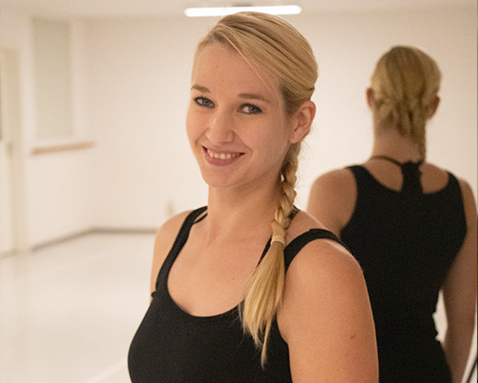

Das Team

Bianca Sievert
Leitung & Choreographie
Ist eine ausgebildete Diplom-Bühnentänzerin und Tanzpädagogin in den verschiedensten Bereichen (Ballett, Jazz, Step, etc.).
Im Alter von vier Jahren begann ihre Leidenschaft für den Tanz, mit fünf Jahren stand sie zum ersten Mal auf der Bühne. Nach Abschließen des Abiturs verschlug es sie für drei Jahre an die Ballettschule Weber nach Erlangen, wo sie 2008 ihren Abschluss in dem Hauptfach Ballett absolvierte.
Seit her ist sie bemüht vor allem den Spaß und die Freude des Tanzes an Kinder, Jugendliche und Erwachsene weiter zu geben.